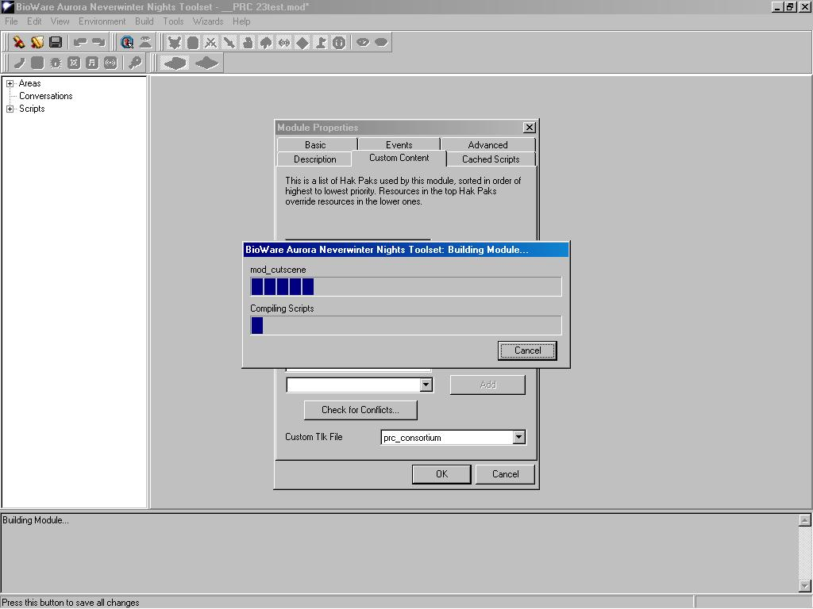

- Neverwinter Nights: EE updated to the latest patch
- Microsoft .NET Framework Redistributable Package (Windows only)
- The PRC8 (Archive)
- Downloadable version of this manual
- Various merge haks (if you are using CEP, see relevant section)
- PRC Server Pack (Defunct) (for those who want to run a server, see relevant section )[This has been left in the manual for historical purposes]
- ACP v4.1 (Alternate Combat Animations Pack, see relevant section)
Installation Instructions
Extract the contents into the correct directories in the directory in which Neverwinter Nights is installed (the module updater can be put anywhere):
| Extension | Directory |
| hak | hak |
| hif | hak |
| erf | erf |
| tlk | tlk |
| 2da | override |
| mod | module |
Installing PRC8 into modules
Before installation, back up your modules. Something may go wrong or you may need the originals for patching as is the case for the Bioware campaigns.
Using the module updater:

| Option | Notes |
| prc8_consortium | Install PRC8 into a module |
| prc8_ocfix | Installs extra fixes for the Bioware campaigns |
These options are contained within the relevant .hif files. You may also create your own .hif file for installing other content (they are plain text, see an existing one for an example).
Manual installation:
- Open the module using the toolset (or other software, if not using windows).
-
Add these haks (on top of any existing haks):
- prc8_2das.hak
- prc8_scripts.hak
- prc8_nsb.hak
- prc8_spells.hak
- prc8_epicspells.hak
- prc8_psionics.hak
- prc8_race.hak
- prc8_textures.hak
- prc8_misc.hak
- prc8_craft2das.hak
If the existing haks contain conflicting content, you must merge the contents in a new hak using the application of your choice (to be placed on top of the list).
At some point the toolset (if you are using it) will attempt to build the module. Click cancel as fast as you can, or the toolset may crash.

- Set the Custom Tlk to prc8_consortium.tlk. If there already is a file there, you must merge the contents in a new tlk using the application of your choice.
- Import prc_consortium.erf (and prc8_ocfix.erf if this is a Bioware campaign modue)
- Add the following module event scripts:
Event Script OnAcquireItem prc_onaquire OnActivateItem prc_onactivate OnClientEnter prc_onenter OnClientLeave prc_onleave OnCutsceneAbort prc_oncutabort OnHeartbeat prc_onheartbeat OnModuleLoad prc_onmodload OnNUIEvent prc_onplayernui OnPlayerChat prc_onplayerchat OnPlayerDeath prc_ondeath OnPlayerDying prc_ondying OnPlayerEquipItem prc_equip OnPlayerLevelUp prc_levelup OnPlayerRest prc_rest OnPlayerTarget prc_onplaytarget OnPlayerRespawn prc_onrespawn OnUnaquireItem prc_onunaquire OnPlayerUnequipItem prc_unequip OnUserDefined prc_onuserdef If the module already has scripts attached to events (and it probably does) then you will either need to edit those scripts and add ExecuteScript("prc_xxx"); at the top of each one or make a new script that calls ExecuteScript() for both the prc script and the old event script.
- Save the module